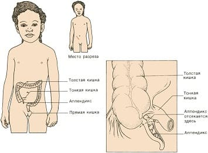
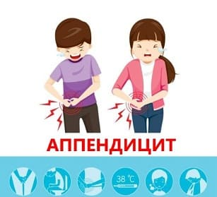

Вашего ребенка, который перед этим хорошо себя чувствовал, вдруг затошнило, у него пропал аппетит, и вы думаете, что у него начинается грипп. Через несколько часов или на следующий день ребенок начинается жаловаться на неопределенную боль вокруг пупка. В этот же день боль смещается в правую нижнюю часть живота сразу над правым бедром или отдает в спину. Вы видите, что ребенок хватается за больное место. Он говорит: «Мама, мне трудно ходить!» Вы трогаете его лоб и чувствуете, что у него небольшой жар. Вы немедленно вызываете врача: «Я думаю, что у моего ребенка аппендицит».
СИМПТОМЫ
Несмотря на то что существует множество причин боли внизу живота (первое место в списке занимают запоры, потом идут инфекции мочевыводящих путей, особенно у девочек, кишечные инфекции, грипп и пищевые отравления), если у вашего ребенка развился следующий набор симптомов, немедленно обращайтесь за медицинской помощью:
• снижение аппетита и тошнота;
• боль в животе, которая начинается с симптома «окружности» (ребенок обводит пупок всей пятерней). Затем в течение нескольких часов или одного дня появляется «симптом точки» — ребенок указывает на правый нижний квадрант живота в область между правым нижним ребром и тазовой костью или вокруг нее и к спине;
• ребенок хромает или держится за правый бок при попытке идти;
• несильный жар;
• боль при подпрыгивании. Попросите ребенка спрыгнуть на пол с высоты около 30 см. Если он откажется спрыгнуть, потому что «будет больно», или хватается за правую нижнюю часть живота после прыжка — стоит заподозрить аппендицит, особенно если есть и другие вышеперечисленные признаки.

ПРИЧИНЫ
Аппендикс — это на первый взгляд бесполезный «отросток» размером с палец, висящий у начала толстого кишечника. Этот небольшой червеобразный придаток открывается в толстую кишку. Если отверстие блокировано, например, непереваренной пищей или твердым стулом, аппендикс воспаляется и инфицируется живущими в нем бактериями. Если воспаленный аппендикс — аппендицит — не выявить и не удалить (обычно в течение 24 часов), он может топнуть», распространяя бактерии инфицируя всю брюшную полость, что закончится тяжелым заболеванием (перитонитом). Чем раньше поставлен диагноз и начато лечение, тем меньше опасность этого. Надо ударить воспаленный участок раньше, чем он разорвется. После своевременной операции ребенок обычно чувствует себя достаточно хорошо, чтобы покинуть больницу в тот же день или на следующий, быстро приходит в норму, восстанавливает аппетит и активность, и только маленький болезненный участочек заживающего шва длиной в дюйм напоминает ему о «плохом дне».
СОВЕТ ДОКТОРОВ СИРС: ПОДОЖДИТЕ С ЕДОЙ! Если исходя из вышеперечисленных подсказок вы заподозрили, что у вашего ребенка аппендицит, не давайте ему есть (но он может выпить немного воды), пока его не осмотрит врач. Присутствие еды в желудке или кишечнике задержит операцию. Чем скорее воспаленный аппендикс окажется в «банке со спиртом», тем лучше. |
ЧТО СДЕЛАЕТ ВРАЧ
Врач немедленно осмотрит вашего ребенка и предпримет следующие шаги:
прощупает ребенку живот. Вы можете заметить, что врач мягко нажимает в области боли и затем быстро убирает руку. Если ребенок при этом вздрагивает, то более вероятно, что это аппендицит. Это называется «симптом Щеткина — Блюмберга — усиление болезненности при резком ослаблении давления»: когда врач быстро убирает руку, воспаленный аппендикс ударяется о брюшную стенку, что причиняет боль;
• врач также может назначить некоторые анализы: например, анализ мочи, чтобы исключить инфекцию мочевых путей, особенно у девочек, и подсчет лейкоцитов. Так как лейкоциты борются с инфекцией, у детей с аппендицитом их количество почти всегда увеличено;
• врач также осмотрит правую ногу ребенка, особенно если тот хромает, так как иногда боль в тазобедренном суставе, например, при инфекции или вывихе, может иррадиировать в брюшную полость.
СОВЕТ ДОКТОРОВ СИРС: ПРОВЕРЬТЕ ГОРЛО Иногда у детей со стрептококковой ангиной вначале появляются боли в животе, похожие на аппендицит. Это происходит из-за того, что вокруг аппендикса расположены железы, похожие на нёбные миндалины, — так что проверьте лимфатические узлы в брюшной полости: ангина тоже может привести к развитию воспаления в животе. Стоит вылечить ангину — симптомы аппендицита исчезают, как по волшебству. |
Иногда диагноз бывает предельно ясен, и врач немедленно позвонит хирургу и отправит вашего ребенка в больницу. Мы при этом говорим родителям: «Этот небольшой отросток должен попасть в банку со спиртом как можно скорее». Если диагноз сомнителен или «аппендицит под вопросом», врач может направить ребенка на рентгенографию, УЗИ или компьютерную томографию, на которой часто виден воспаленный аппендикс.
Вы могли слышать о детях (взрослых), которым сделали аппендэктомию и удалили «нормальный» аппендикс. Даже при использовании современных диагностических методов диагноз может остаться сомнительным. Так что старая мудрость «Если сомневаетесь — удалите» все еще актуальна, потому что разорвавшийся аппендикс может привести к тяжелому инфицированию брюшной полости — перитониту.
Здоровье ребенка от докторов Сирс / Сирс У. и др.